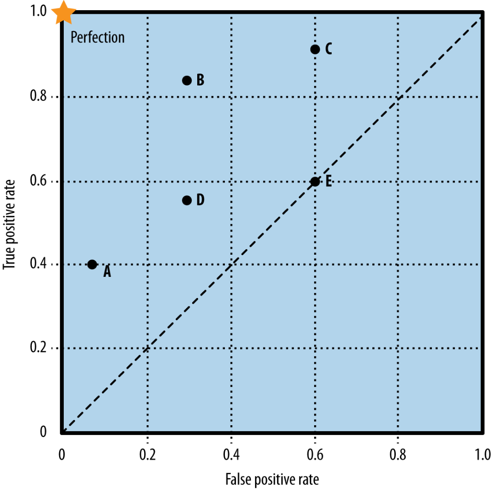
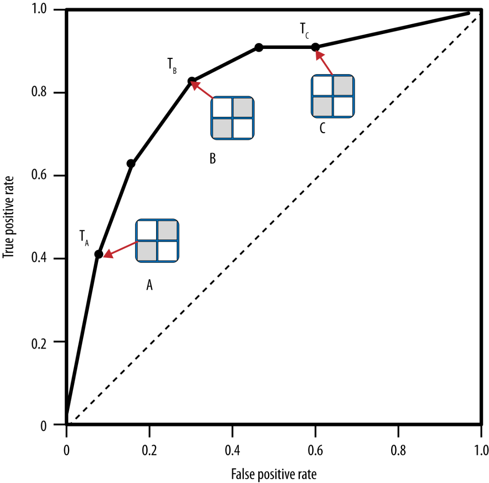
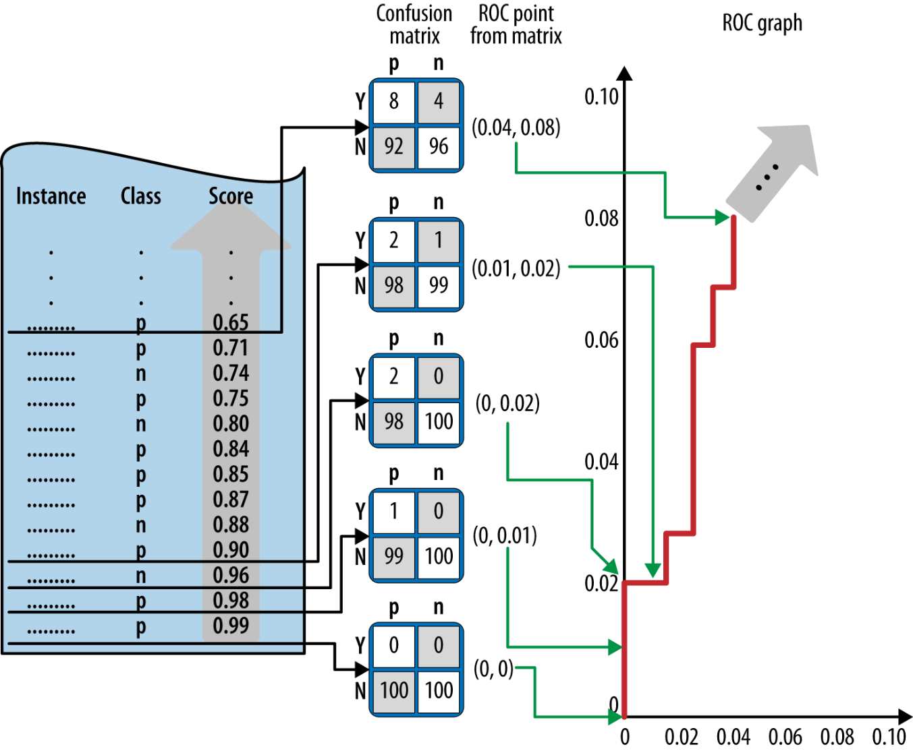
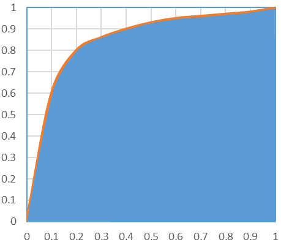
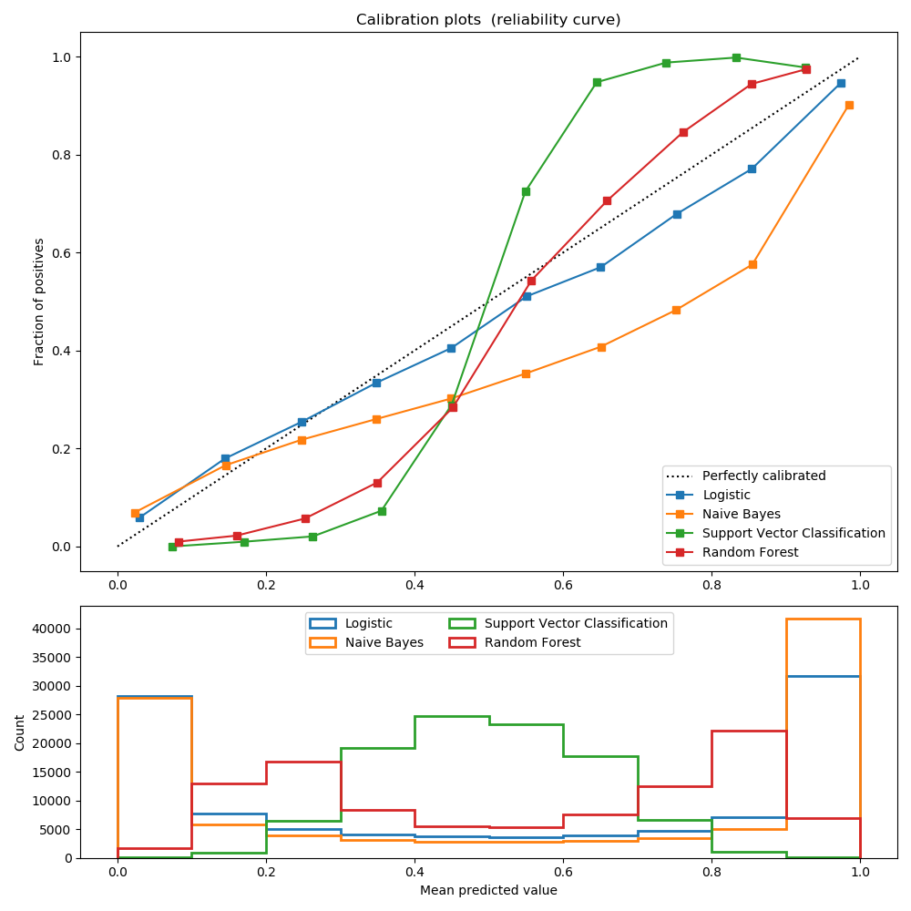

Advanced Machine Learning
23: Model Calibration
Schedule
| # | date | topic | description |
|---|---|---|---|
| 1 | 22-Aug-2022 | Introduction | |
| 2 | 24-Aug-2022 | Foundations of learning | |
| 3 | 29-Aug-2022 | PAC learnability | |
| 4 | 31-Aug-2022 | Linear algebra (recap) | hw1 released |
| 05-Sep-2022 | Holiday | ||
| 5 | 07-Sep-2022 | Linear learning models | |
| 6 | 12-Sep-2022 | Principal Component Analysis | project ideas |
| 7 | 14-Sep-2022 | Curse of Dimensionality | hw1 due |
| 8 | 19-Sep-2022 | Bayesian Decision Theory | hw2 release |
| 9 | 21-Sep-2022 | Parameter estimation: MLE | |
| 10 | 26-Sep-2022 | Parameter estimation: MAP & NB | finalize teams |
| 11 | 28-Sep-2022 | Logistic Regression | |
| 12 | 03-Oct-2022 | Kernel Density Estimation | |
| 13 | 05-Oct-2022 | Support Vector Machines | hw3, hw2 due |
| 10-Oct-2022 | * Mid-point projects checkpoint | * | |
| 12-Oct-2022 | * Midterm: Semester Midpoint | exam | |
| 14 | 17-Oct-2022 | Matrix Factorization | |
| 15 | 19-Oct-2022 | Stochastic Gradient Descent |
| # | date | topic | description |
|---|---|---|---|
| 16 | 24-Oct-2022 | k-means clustering | |
| 17 | 26-Oct-2022 | Expectation Maximization | hw4, hw3 due |
| 18 | 31-Oct-2022 | Automatic Differentiation | |
| 19 | 02-Nov-2022 | Nonlinear embedding approaches | |
| 20 | 07-Nov-2022 | Model comparison I | |
| 21 | 09-Nov-2022 | Model comparison II | hw5, hw4 due |
| 22 | 14-Nov-2022 | Model Calibration | |
| 23 | 16-Nov-2022 | Convolutional Neural Networks | by a guest lecturer |
| 21-Nov-2022 | Fall break | ||
| 23-Nov-2022 | Fall break | ||
| 24 | 28-Nov-2022 | Word Embedding | hw5 due |
| 30-Nov-2022 | Presentation and exam prep day | ||
| 02-Dec-2022 | * Project Final Presentations | * | |
| 07-Dec-2022 | * Project Final Presentations | * | |
| 12-Dec-2022 | * Final Exam | * | |
| 15-Dec-2022 | Grades due |
Outline for the lecture
- Receiver Operator Characteristics
- Trustworthy AI
- Model Calibration
ROC
Receiver Operator Characteristics

Receiver Operator Characteristics
ROC: each point is a classifier
ROC construction
Area Under the Curve (AUC)
The AUC is equivalent to the Mann-Whitney-Wilcoxon ordering measure (1945) and Gini Coefficient (1999; 2005). All are equivalent to probability that a randomly chosen positive instance will be ranked higher than a randomly chosen negative instance.
Trustworthy AI
Why trustworthy AI is interesting
- AI is increasingly used not only for decision support, but also for automated decision making
- Trust in resulting AI decisions is vital
- How to make AI solutions trustworthy?
- What does it mean to be trustworthy?
- AI trustworthiness is strongly manifested in the fields of Explainable AI (XAI) and Fairness, Accountability and Transparency (FAT)
Interpretability
- A recognized key property of trustworthy predictive models
- Interpretable models make it possible to
understand individual predictions without invoking explanation frameworks/modules - If a model is interpretable, inspection and analysis becomes straightforward
- However, the most visible approaches are building external explanation frameworks. Vigorously (including ourselves )
Algorithmic Confidence
- FAT Principlesfooter include
accuracy as a vital component of accountable algorithms - One guiding question for accountable algorithms: "
How confident are the decisions output by your system? " - Thus, not just everything with the accuracy on top, but also ability to, at the very least,
report uncertainty - Extremely valuable to have algorithm reason about its own uncertainty and confidence in
individual recommendations
Interpretable and Accountable models
Requirements
-
Interpretable modelsdecision trees, rule sets, or glass-box layer of Usman Mahmood
-
Well-calibrated models -
Specific to individual predictions, exhibiting different confidences -
Fixed models available for inspection and analysis
On Calibration of Modern Neural Networks
Confidence calibration
the problem of predicting probability estimates representative of the true correctness likelihood
Why do it?
- The probability associated with the predicted class label should reflect its ground truth correctness
- Model interpretability
What's perfect calibration?
Supervised multi-class classification:
- The input $X \in \mathcal{X}$ and label $Y \in \mathcal{Y} = {1, ..., K}$
- Follow $\pi(X,Y) = \pi(Y|X)\pi(X)$
- The Neural Network $h(X) = (\hat{Y},\hat{P})$
The perfect calibration is\begin{equation} \mathbb{P}(\hat{Y}=Y |\hat{P}=P) = p, \forall p \in [0,1] \end{equation}
Reliability diagrams/Calibration plots
- Reliability Diagrams are a visual representation of model calibration (DeGroot & Fienberg, 1983; Niculescu-Mizil & Caruana, 2005)
- These diagrams plot expected sample accuracy as a function of confidence
- If the model is perfectly calibrated – $\mathbb{P}(\hat{Y}=Y |\hat{P}=P) = p, \forall p \in [0,1]$ – then the diagram should plot the identity function. Any deviation from a perfect diagonal represents miscalibration.
Calibration plots
Modern best performing models are lying
- a 5-layer LeNet (LeCun et al., 1998) is
- a 110-layer ResNet (He et al., 2016) on the CIFAR-100 dataset is
Expected accuracy and average confidence
- Let $B_m$ be the set of indices $\in I_m=(\frac{m-1}{M}, \frac{m}{M}]$. The expected accuracy of $B_m$ is \begin{equation*} acc(B_m) = \frac{1}{|B_m|}\sum_{i \in B_m} \mathbf{1}(\hat{y}_i=y_i) \end{equation*}
- The average confidence within bin $B_m$ is defined as: \begin{equation*} conf(B_m) = \frac{1}{|B_m|} \sum_{i \in B_m} \hat{p}_i \end{equation*}
- $acc(B_m)$ and $conf(B_m)$ approximate the left-hand and right-hand sides of $\mathbb{P}(\hat{Y}=Y |\hat{P}=P) = p, \forall p \in [0,1]$ respectively for bin $B_m$
- A perfectly calibrated model will have $acc(B_m) = conf(B_m)$
Expected Calibration Error
- The Expected Calibration Error (ECE) is used to summarize calibration as statistics.
- One notion of miscalibration is the difference in expectation between confidence and accuracy \begin{equation} \mathbb{E}_{\hat{P}} \Big[\Big|\mathbb{P}(\hat{Y}=Y |\hat{P}=P) - p \Big|\Big] \end{equation}
- It is approximates by (Naeini et al., 2015) as: \begin{equation} ECE = \sum_{m=1}^M \frac{|B_m|}{n} \Big| acc(B_m) - conf(B_m)\Big| \end{equation}
Mamixum Calibration Error
- For high-risk application we may wish to minimize the worst-case deviation between confidence and accuracy \begin{equation} \max\limits_{p\in[0,1]} \Big[\Big|\mathbb{P}(\hat{Y}=Y |\hat{P}=P) - p \Big|\Big] \end{equation}
- The Mamixum Calibration Error (MCE) is defined as: \begin{equation} MCE = \max\limits_{m\in{1,\dots,M}} \Big| acc(B_m) - conf(B_m)\Big| \end{equation}
Negative log likelihood
- Negative log likelihood is a standard measure of a probabilistic model’s quality (Friedman et al., 2001)
- It is also referred to as the cross entropy loss in the context of deep learning
- Given a probabilistic model $\pi(Y|X)$ and $n$ samples, $NLL$ is defined as: \begin{equation} \mathcal{L} = - \sum_{i=1}^n log(\hat{\pi}(y_i|\mathbf{x}_i)) \end{equation}
- It is a standard result (Friedman et al., 2001) that, in expectation, NLL is minimized if and only if $\hat{\pi}(Y|X)$ recovers the ground truth conditional distribution $\pi(Y|X)$.
What affects calibration
- Increasing depth and width
may reduce classification error - negatively affect model calibration - The models trained with Batch Normalization
tend to be more miscalibrated - The training with less weight decay
has a negative impact on calibration .
NLL and Calibration
- The network learns better classification accuracy at the expense of well-modeled probabilities.
- These high capacity models are not necessarily immune from overfitting, but rather, overfitting manifests in probabilistic error rather than classification error.
Calibration Methods
- Histogram binning (Zadrozny & Elkan, 2001)
- Isotonic regression (Zadrozny & Elkan, 2002)
- Bayesian Binning into Quantiles (BBQ) (Naeini et al., 2015)
- Platt scaling (Platt et al., 1999, Niculescu-Mizil & Caruana, 2005)
Histogram Binning
- All uncalibrated predictions $\hat{p}^i$ are divided into mutually exclusive bins $B_1 , . . . , B_M $.
- Each bin is assigned a calibrated score $\theta_m$, i.e. if $\hat{p}_i$ is assigned to bin $B_m$, then $\hat{q}^i = \theta_m$
- At test time, if prediction $\hat{p}_{te}$ falls into bin $B_m$, then the calibrated prediction $\hat{q}_{te}$ is $\theta_m$.
- \begin{align} \underset{\theta_1,\dots,\theta_M}{\min} \sum_{m=1}^M \sum_{i=1}^n \mathbf{1}(a_m\le\hat{p}_i \lt a_{m+1})(\theta_m - y_i)^2 \end{align}
Isotonic Regression
\begin{align*} \underset{M, \theta_1,\dots,\theta_M, \\ a_1, \dots, a_{M+1}}{\min} \sum_{m=1}^M \sum_{i=1}^n \mathbf{1}(a_m\le\hat{p}_i \lt a_{m+1})(\theta_m - y_i)^2\\ \text{subject to } 0=a_1\le a_2\le \dots \le a_{M+1} = 1,\\ \theta_1 \le \theta_2 \le \dots \le \theta_M \end{align*}Bayesian Binning into Quantiles (BBQ)
- BBQ marginalizes out all – possible binning schemes to produce $\hat{q}$
- BBQ performs Bayesian averaging of the probabilities produced by each scheme \begin{align*} \mathbb{P}(\hat{q}_{te} | \hat{p}_{te}, D) = \sum_{s\in\mathcal{S}} \mathbb{P}(\hat{q}_{te}, S=s | \hat{p}_{te}, D) \\ = \sum_{s\in\mathcal{S}} \mathbb{P}(\hat{q}_{te} | \hat{p}_{te},S=s, D) \mathbb{P}(S=s | D), \end{align*} where $\mathbb{P}(\hat{q}_{te} | \hat{p}_{te},S=s, D)$ is a the calibrated probability under scheme $s$
Platt Scaling
- Platt scaling (Niculescu-Mizil & Caruana, 2005), learns scalar parameters $a, b \in \mathbb{R}$ and outputs $\hat{q} = \sigma(az_i + b)$ as the calibrated probability
- $a$ and $b$ is optimized over NLL loss
- The parameters of NN should be fixed
Binning for multiclass case
- Treating the problem as K one-versus-all problems
- Form a binary calibration problem where the label is $\mathbf{1}(y_i = k)$ and the predicted probability is $\sigma(z)_{SM}^{(k)}$
- Obtain $[\hat{q}_i^{(1)}, . . . , \hat{q}_i^{(K)}]$
- Predict $\hat{y}_{i}' = \argmax [\hat{q}_i^{(1)}, . . . , \hat{q}_i^{(K)}]$
- New confidence is $\hat{q}_i' = \frac{max[\hat{q}_i^{(1)}, . . . , \hat{q}_i^{(K)}]}{\sum_{j=1}^L \hat{q}_i^{(j)}} $
Scaling for multiclass case
- Let $\mathbf{z}_i$ be the logits vector produced before the softmax layer for input $\mathbf{x}_i$. Matrix scaling applies a linear transformation $\mathbf{W}\mathbf{z}_i + \mathbf{b}$ to the logits \begin{align*} \hat{q}_i = \max\limits_{k} \sigma_{SM}(\mathbf{W}\mathbf{z}_i + \mathbf{b})^{(k)}\\ \hat{y}_{i}' = \argmax\limits_{k} (\mathbf{W}\mathbf{z}_i + \mathbf{b})^{(k)} \end{align*}
- $\mathbf{W}$ is restricted to be diagonal matrix, because of quadratic grows of parameters with number of classes
Temperature Scaling
- The simplest extension of Platt scaling, uses a single scalar parameter $T > 0$ for all classes
- Given the logit vector $\mathbf{z}_i$, the new confidence prediction is \begin{equation*} \hat{q}_i = \max\limits_k \sigma_{SM} \Big(\frac{\mathbf{z}_i}{T}\Big) ^ {(k)} \end{equation*}
- $T$ “softens” the softmax (i.e. raises the output entropy) with $T > 1$.
- As $T \rightarrow \inf$, the probability $\hat{q}_i$ approaches $1/K$, which represents maximum uncertainty.
- With $T = 1$, we recover the original probability $\hat{p}_i$.
- As $T \rightarrow 0$, the probability collapses to a point mass (i.e. $\hat{q}_i = 1$)
- $T$ is optimized with respect to NLL on the validation set
- Prediction $\hat{y}_{i}^{\prime}$ remains unchanged, since $T$ does not change the maximum of the softmax function, temperature scaling does not affect the model’s accuracy.
Resutls: Expected calibration error
Results: Reliability diagrams

Bibliography
- Zhang Z, Dalca AV, Sabuncu MR. Confidence Calibration for Convolutional Neural Networks Using Structured Dropout. arXiv preprint arXiv:1906.09551. 2019 Jun 23.
- Mukhoti J, Kulharia V, Sanyal A, Golodetz S, Torr PH, Dokania PK. Calibrating Deep Neural Networks using Focal Loss. arXiv preprint arXiv:2002.09437. 2020 Feb 21.
- Lin TY, Goyal P, Girshick R, He K, Dollár P. Focal loss for dense object detection. InProceedings of the IEEE international conference on computer vision 2017 (pp. 2980-2988).
- Pereyra G, Tucker G, Chorowski J, Kaiser Ł, Hinton G. Regularizing neural networks by penalizing confident output distributions. arXiv preprint arXiv:1701.06548. 2017 Jan 23.
- When Does Label Smoothing Help?
- Kumar A, Sarawagi S, Jain U. Trainable calibration measures for neural networks from kernel mean embeddings. InInternational Conference on Machine Learning 2018 Jul 3 (pp. 2805-2814).
- Naeini MP, Cooper GF. Binary classifier calibration using an ensemble of near isotonic regression models. In2016 IEEE 16th International Conference on Data Mining (ICDM) 2016 Dec 12 (pp. 360-369). IEEE.
- Naeini MP, Cooper G, Hauskrecht M. Obtaining well calibrated probabilities using bayesian binning. InTwenty-Ninth AAAI Conference on Artificial Intelligence 2015 Feb 21.
- Leathart T, Frank E, Holmes G, Pfahringer B. Probability calibration trees. arXiv preprint arXiv:1808.00111. 2018 Jul 31.
- Kumar A, Liang PS, Ma T. Verified uncertainty calibration. InAdvances in Neural Information Processing Systems 2019 (pp. 3787-3798).
- https://github.com/gpleiss/temperature_scaling